群馬の養蚕信仰を巡る旅、片品村までやって来た。
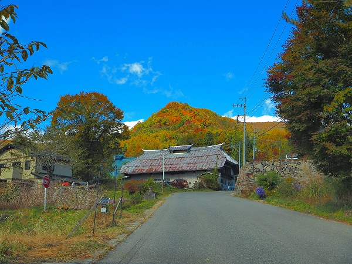
群馬県北部にはこのように巨大な家屋が多い。
これらは屋根裏で養蚕を行っていた（る？）建物だ。
集落を抜けると細い一本道が続く。
目的地はその一本道の終わりにある神社だ。
一本道は途中から未舗装道になり、そこから先は私のヘタレ車ではとても先に進めそうにないので空き地に車を停め徒歩で向かう事にした。
多分四駆のオフロード車（しかも軽）じゃないと無理だと思う。
何か凄い所に来ちゃったな…。
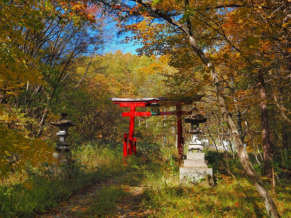
しばらく歩くと赤い鳥居が見えてくる。
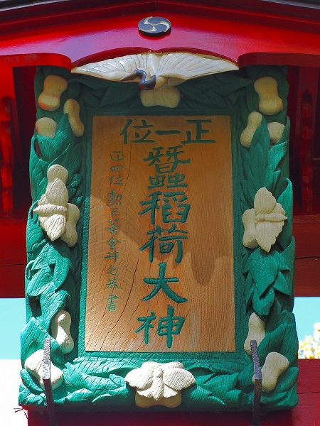
鳥居の額には
蚕稲荷大神とある。
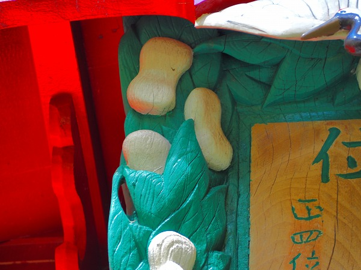
額のフレームには
繭玉や蚕の成虫の蛾の姿などが彫刻されている。
さすが蚕の神社だ。
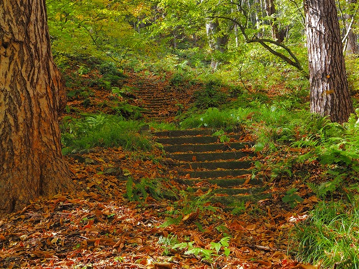
さらに数十分歩くと階段が見えてくる。
階段を上り、判りにくい山道を歩いて行くと崖の下に3つの建物が見えてくる。
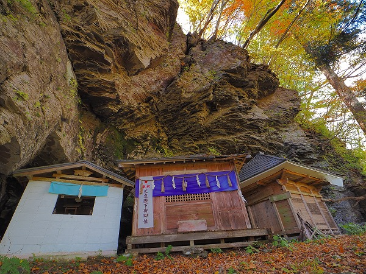
それがこちら。
中央が蚕稲荷神社、右は穴観音、そして左が狐を奉納する納狐堂である。
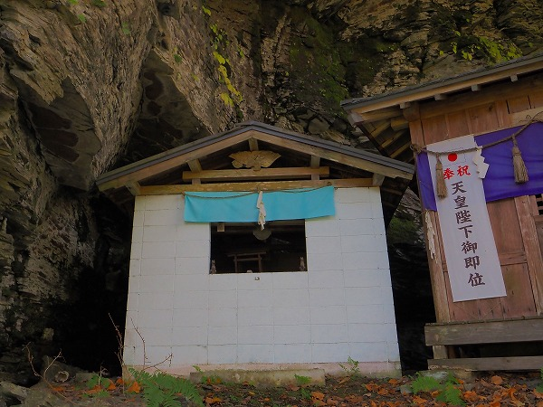
お目当てはもちろん納狐堂。
まごうことなく向かう。
この建物、ブロック造なのだが、正面の小さな小窓しか開口部がない。
つまり入口がないのだ。
で、中を見ると…
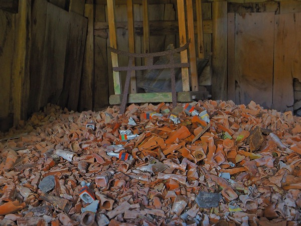
うぉっ！
うず高く狐の陶器が積み上げられている。
養蚕信仰のガチさを目の当たりにした思いだ。
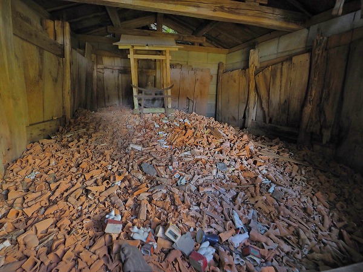
ほとんどが素焼きの鉄砲狐だ。
この小窓から狐を投げ入れるのだろう。
他に方法がないもの。
奥の方とかはかなりマジで投げ入れないと届かないはず。
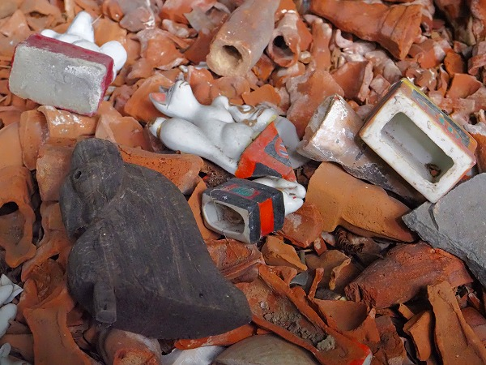
小窓から投げ入れるからだろうが、素焼きの狐の多くは割れている。
この建物の形状からしてひたすら積みあがっていくだけなのだろう。
中が一杯になった際はどうするのだろう？
掻きだす事すらできないと思うのだが…。
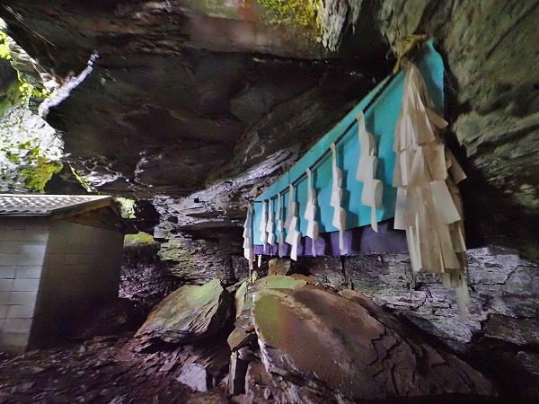
建物の裏は浅い洞窟になっている。
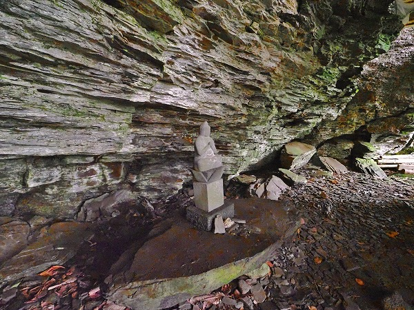
そこに石仏が安置されていた。
船に乗っているかのようだった。
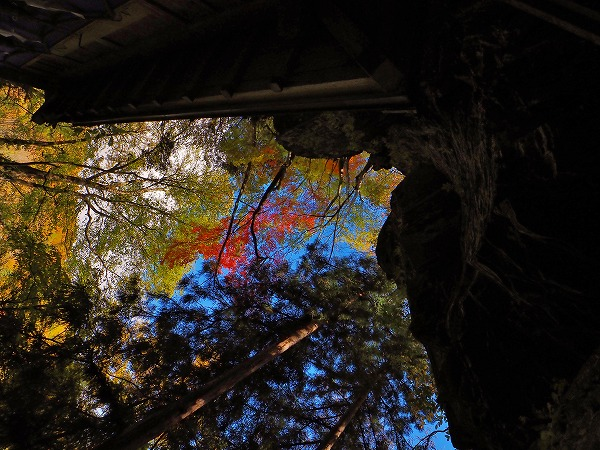
実は数か月前にもここを訪れたのだが、急なゲリラ豪雨に見舞われ、滝のような雨水と判りにくく急な道に難儀してしまった。
ずるずるになってやっと辿りついたら足はガクガクでしかも真っ暗でマトモな写真がとれず、改めて訪問した、という訳。
天気さえよければそんなに苦労はしなかったです。
（2022.07. 2022.10.）
次は渋川市の
千石稲荷神社。
ここもまたアプローチがややこしい神社だった。
私道、というかほぼ民家の庭先のような道を走り、落ち葉だらけの急斜面を上り、これより先は車では無理！というところから徒歩で進む。
このルート、多分地図には乗ってないので、もし行かれる方は充分下調べしてくだされ。
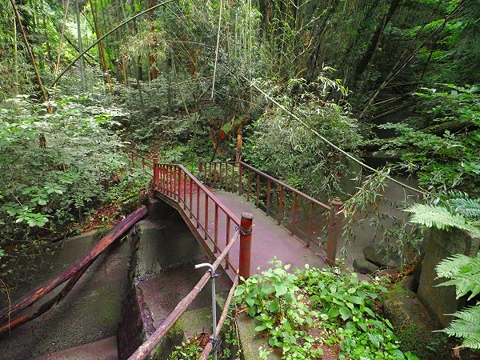
神社へと向かう鉄の橋。
もちろん徒歩で渡りましたよ。
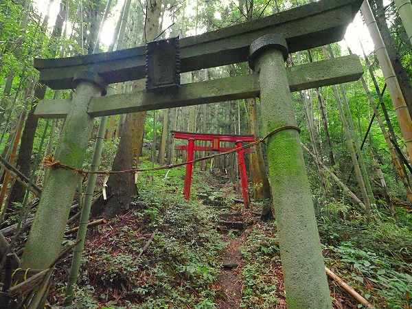
山道を歩いて上る。
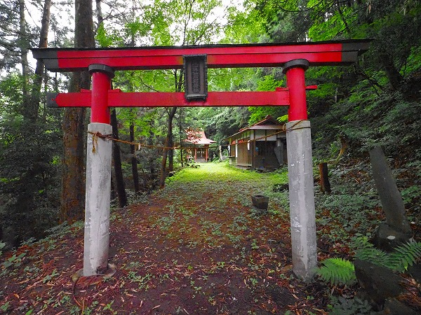
急な石段を歩く事10分程。
神社が見えてきた。
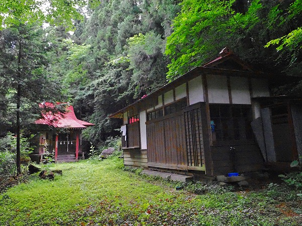
社殿と社務所的な建物（休憩所？）。
もちろん誰もいませんでした。
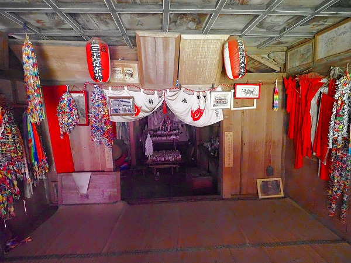
拝殿内部。
千羽鶴と狐像が奉納されている。
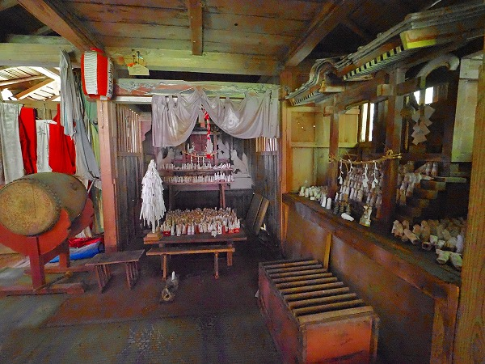
こちらは本殿。
鉄砲狐が多数奉納されている。
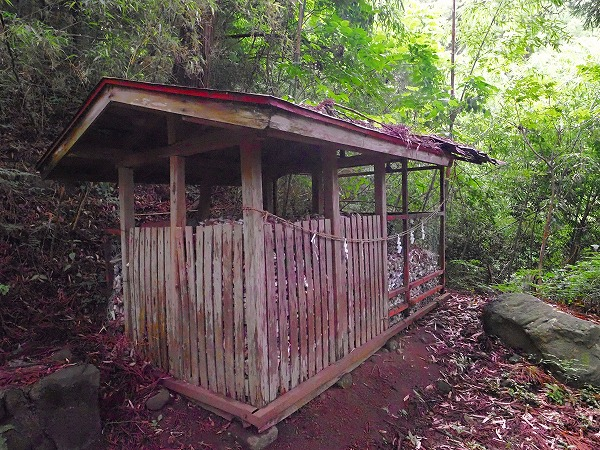
この神社で特筆すべきはこの小屋。
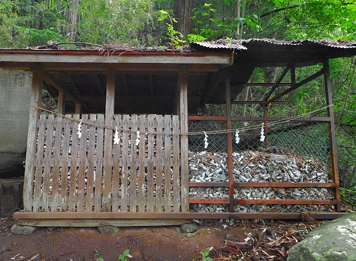
本殿や社務所の手前にある簡素な小屋だが、中を覗いてみると…
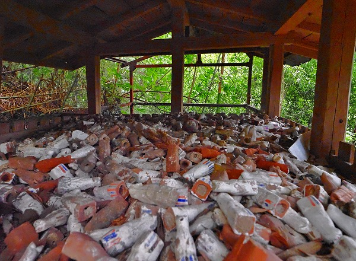
狐が大量に奉納されていた
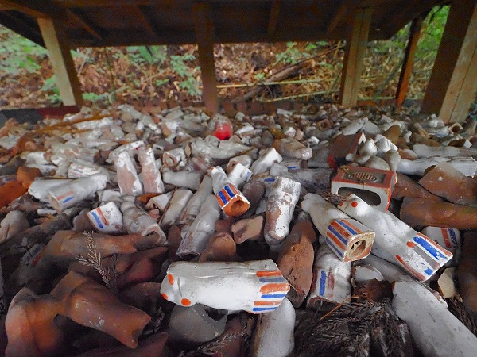
狐はほぼ全部鉄砲狐だった。
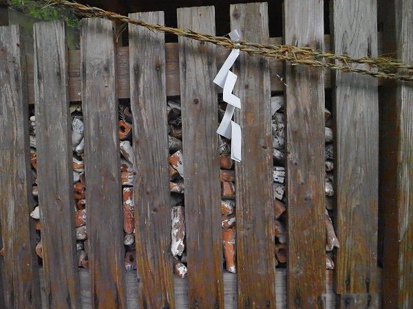
小屋は2つのパートから構成されている。
木で覆われた部分には目いっぱい狐が堆積していた。
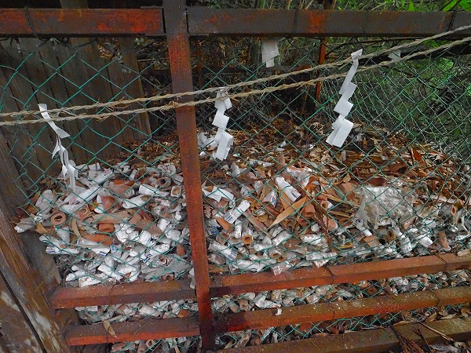
金網の部分は後から増築されたようだ。
こちらも6～7割埋まっていた。
増築した、ということは奉納された狐は処分せずに
ずーっと積み上げっぱなしなのだと考えられる。
ここももまた凄い数だった。
（2022.07.）
群馬の養蚕信仰巡り、ラストは東吾妻町の
加護丸稲荷大明神だ。
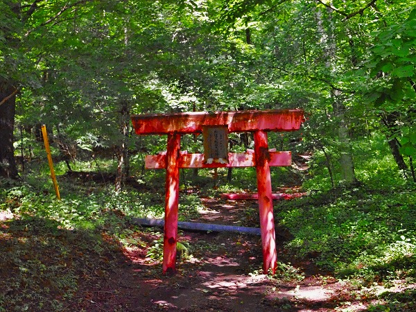
東吾妻町というと判りにくいが、要するに榛名湖のすぐ北側にある烏帽子ヶ岳という山の中にある神社だ。
ちなみに登山口は榛名湖の湖畔近くにあり、そこは高崎市榛名湖町となっている。
この神社を知ったのはテレビだった。
NHKで昔の新日本紀行の再放送をやっており（「よみがえる新日本紀行」という番組名になっている）、ここの神社に狐を奉納するシーンが映っていたのだ。
夜に白い割烹着を着た中年の女性が山に入り、狐を奉納して蚕が当たるように祈願しているのだ。
確か昭和50年代の番組だったが、その時点で山中の神社に大量の狐が奉納されていた。
で、その神社を見に榛名湖畔に来た、というわけ。
湖の北端にほど近い登山口には車が数台停められる空き地がある。
そこからは徒歩で登山だ。
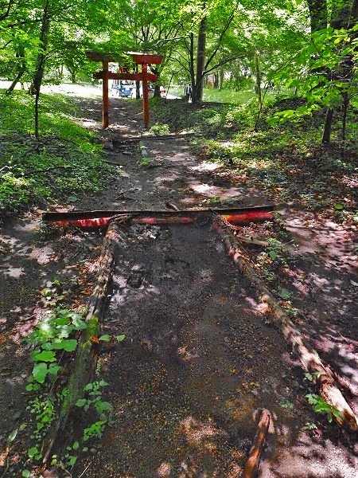
駐車場から入ってすぐの鳥居。
いきなり2本目の鳥居が倒れて土に返ろうとしている。
このまま放置するって凄いなあ。
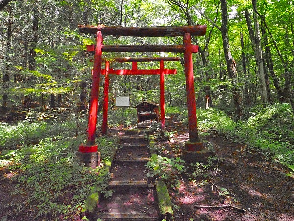
気を取り直して先に進む。
すぐに小さな社が見えてくる。
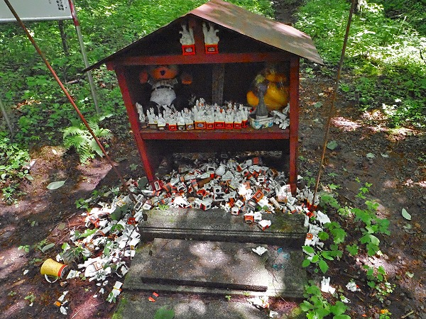
そこには沢山の狐像が奉納されていた。

狐はほぼ左右対称型狐だった。
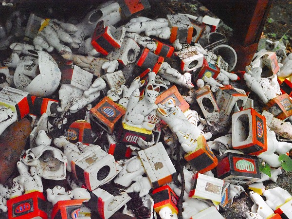
それ以上に
下の段の狐像がことごとく倒れていた。
これは誰かのイタズラなのだろうか？だとしたらかなり罰当たりなことですぞ！
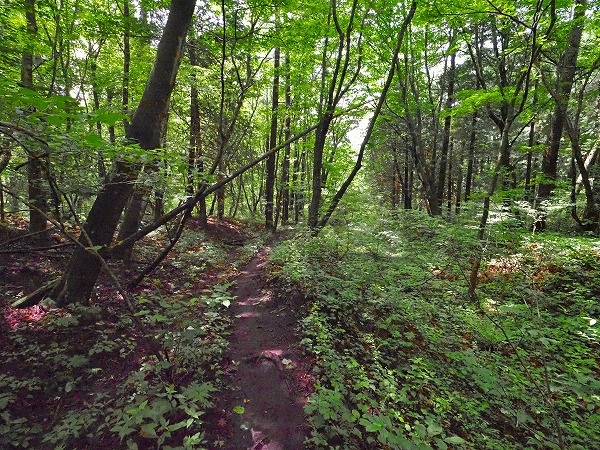
その先はバッチリ登山道。
また山歩きかぁ。
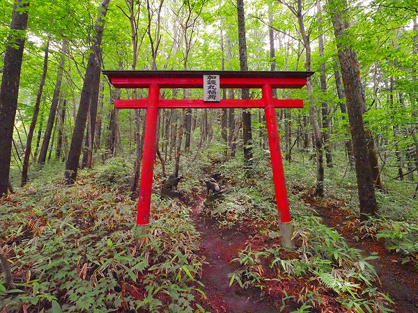
20分ほど歩くと鳥居が現れる。
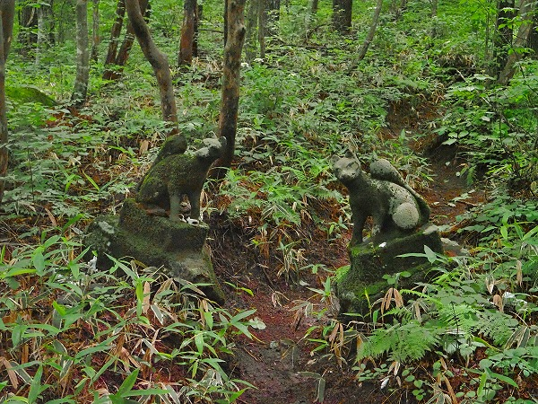
鳥居の先には狐がお出迎え。
ここから先は結構急な登りになる。
確か先程の新日本紀行の映像では割烹着のおっかさんがサンダル履きでヒョイヒョイと小走りで狐を奉納していたような気が…。
昭和のおっかさんの体力を身をもって体感した次第です。凄いぞ。
ハアハア言いながらやっと辿り着いたのがこちら。
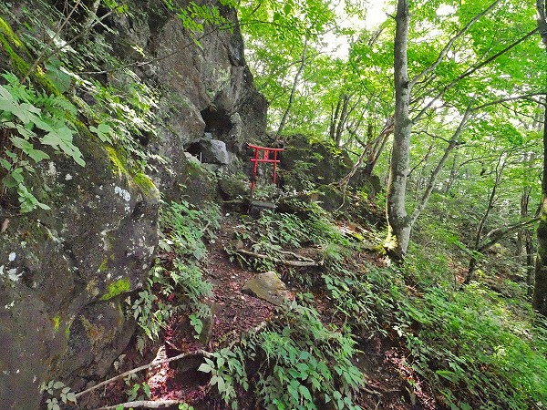
加護丸神社である。
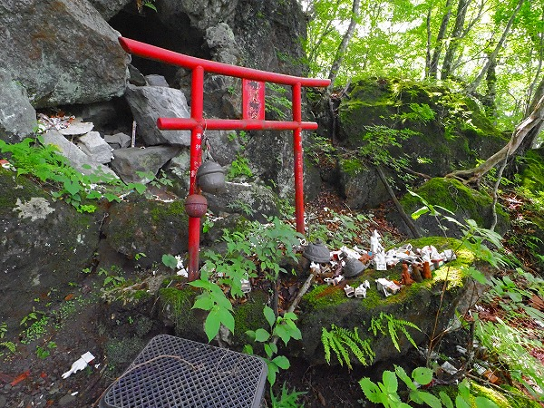
岩の間の洞窟がその本体だ。
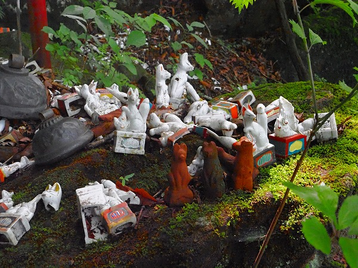
周辺には狐が沢山転がっている。
少数ながら鉄砲狐もチラホラ。
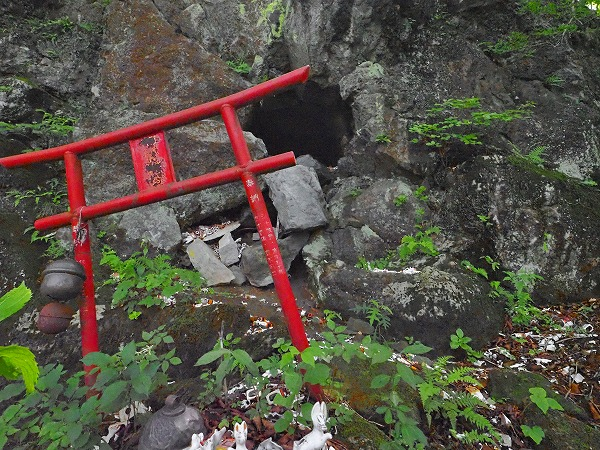
鳥居の奥に小さな洞穴がある。
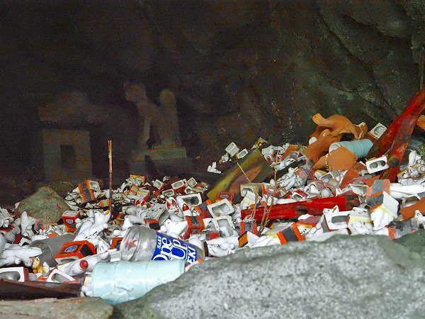
中には小さな石祠とこれまた無数の狐像。
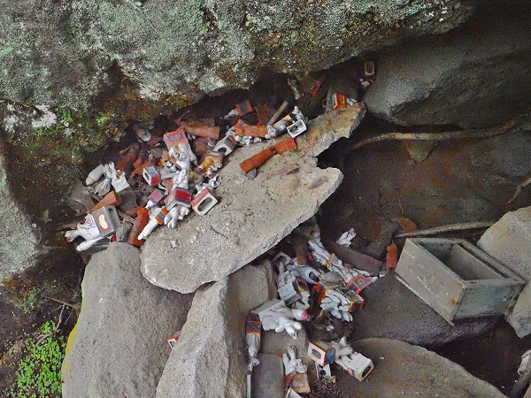
ちょっとした岩の隙間にも狐が詰め込まれていた。
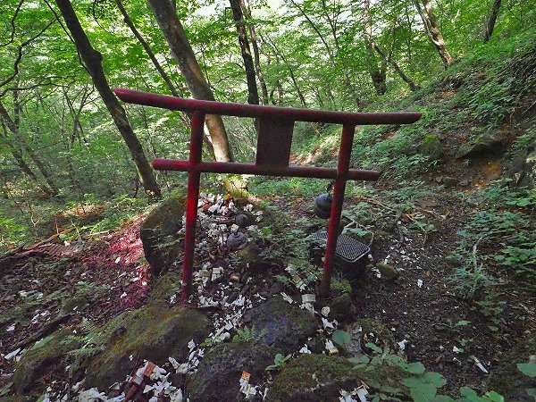
それにしてもこの乱雑な光景は何だろう？
大半が転がっており、そして大半が割れてしまっている。
これは個人的な想像だが、もしかしたら
ぞんざいに扱うことが祈願の作法なのだろうか？
もっと極端に言えば願をかける際に敢えて岩に叩きつけて割るとか。
であれば、登山口にあった狐が倒れていたのも、もしかしたらわざとその様に奉納したのだろうか？
先に紹介した片品村の蚕稲荷神社、そして千石稲荷神社も狐を「放り投げる」という奉納方法を採っている。
つまり投げる（=割れる）行為に何らかの意味があるのかも知れない。
他の稲荷神社では整然と並んでいたのに上記の3社だけはワイルドな奉納がなされていたのでついつい妄想してしまった次第です、はい。
（2022.07.）
最後に番外編
長野県佐久市にある
鼻顔稲荷神社。
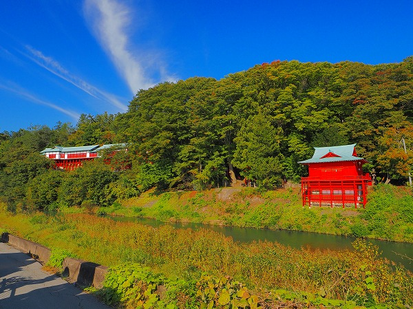
千曲川水系の湯川に面した場所にある。
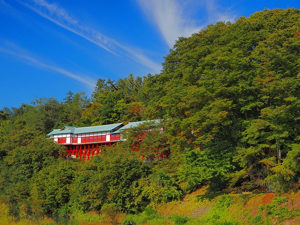
川のすぐ上は山になっており、その山に寄りかかるように社殿が造られている。
いわゆる懸け造りの社殿だ。
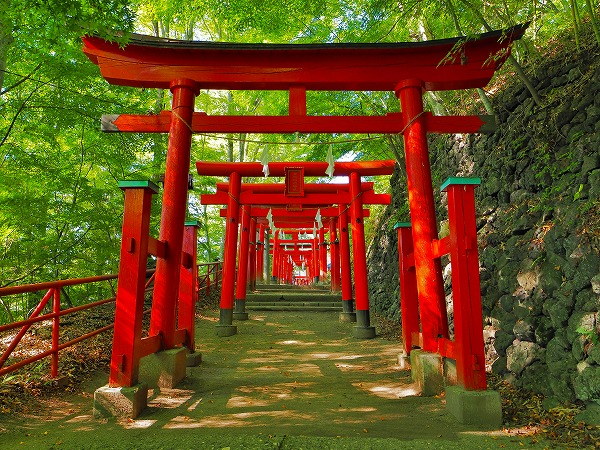
この神社は地形的に変わった構成になっている。
川沿いの山の中腹に境内がある、という事で、境内は川に沿った形状になっている。
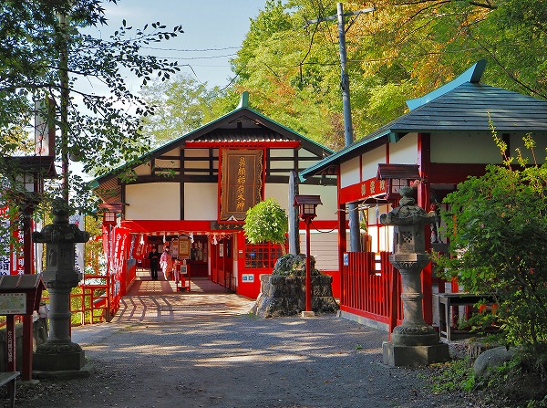
川沿いの参道を進んでいくと社殿が見えてくる。
正面から見て建物の左が川側で右が山側となる。
この神社も養蚕家が信仰している神社だ。
長野県とはいえ群馬県の安中市や富岡町からも近く、群馬の養蚕家も参拝に行く事が多々あるそうだ。
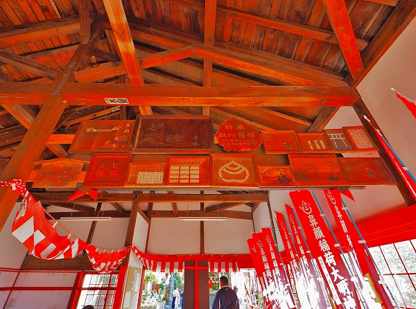
繭玉が奉納されている。
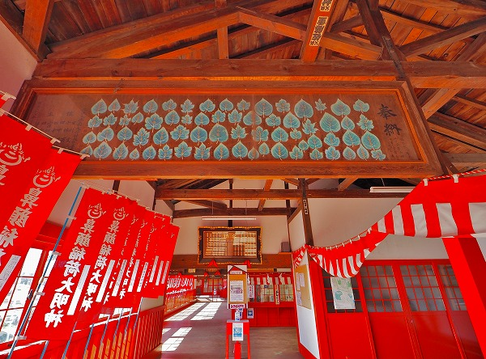
これは桑の葉を象ったものだ。
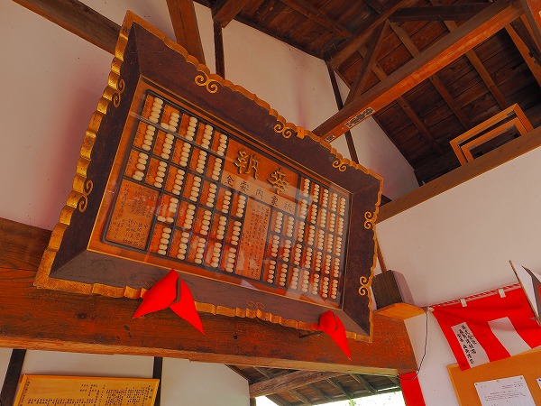
繭玉奉納。
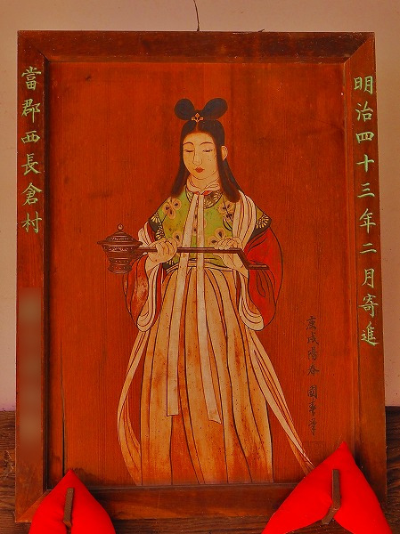
金色姫…なのか。
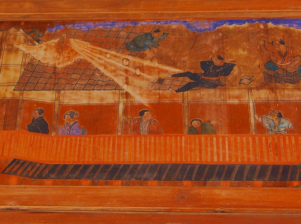
印象深かったのがこちら。
多分、瓦屋根を葺いていた職人が転んで落ちそうになったところを雲間から現れた稲荷パワーで転落を防いでもらった、的な絵柄。
これはカトリックの教会に奉納される
エクスヴォトに非常に似ている。
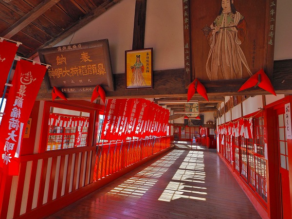
回廊。
左の幟が並んでいる窓の下には川が流れている。
右手の奥に本殿がある。
コレが本殿。
回廊の突き当りの右側、川の方を向いている。
社殿の中に内包されているのも珍しいが、参道に対して横を向いている形式というのも珍しい。
中を覗くとこんな感じ。
要するに岩壁にある穴が重要なのだ。
いうなれば、この穴こそがこの神社の信仰のキモで、その穴を保護するためにこの社殿が建てられたのだ。
しかも川沿いにあるため、参道に対して本殿が直角に曲がっている、という変速的な形式を採用せざるを得なかったのだ。
地形という条件が先にあって、それに建物を合わせた恰好なわけだ。
私はこのような他律的な社寺の構成は嫌いじゃない。
いや、むしろ大好物だ。
異質な条件を解決するために用いる異質な回答。
それは大観音の内部構造だったり、懸け造りだったり、端正な建築とは違う歪んだ空間が現れる。
それは言い換えればバロックであり、奇想の空間なのだ。
そしてこの稲荷神社にはもうひとつの秘密がある。
先程の本殿とは別に、もうひとつ洞穴があるのだ。
これは旧本殿と称されている。
つまりこここそが
鼻顔稲荷神社の最も重要な場所、なのだ。
中を覗いてみると…

洞窟の中に
大量の狐が積みあげられていた。
ここもまた「放り投げる」系の奉納形態だ。
鉄砲狐も左右対称型狐も混在している。
先に示した積み上げ系、または放り投げ系の中でも最も呪術的なものを感じた光景だった。
奉納物を処分することなく延々と堆積させる。
その行為は奉納物を大切にしたい、という心根からのみならず、これだけ奉納されてるんだぜ、という信仰の誇示でもあるのかも知れない。
以上、群馬の養蚕信仰の狐奉納のレポートはひとまずお終い。
産業と信仰が密接に関わり合った一例として報告させていただきました。
今後ともこの習俗には着目していく所存でございます。
また新たな発見があったら報告させて頂きます。
（2022.10.）